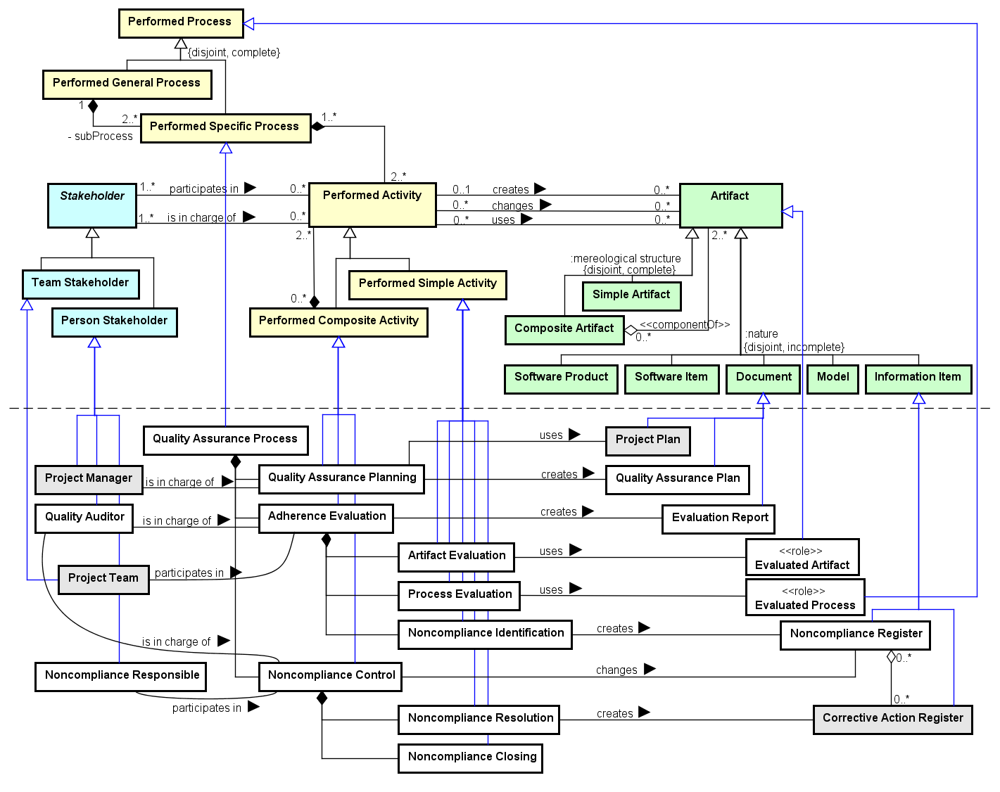

Ex.: a neglected activity in a process; a document wrongly specified.
The Quality Assurance Process Ontology (QAPO) aims at representing the activities, artifacts and stakeholders involved in the Quality Assurance Process. Since QAPO can be applied in the context of several SE subdomains, it represents some general notions applicable for diverse SEON processes and artifacts.
Networked ontologies used by QAPO:
| Ontology | Relation | Integration Level |
| SPO - Software Process Ontology | All QAPO concepts extend concepts from SPO. | High |
Figure 1 presents the conceptual model of the QAPO.

Figure 1. QAPO conceptual model.
The Quality Assurance Process is a Process with the purpose of conducting the activities related to software quality assurance, assessing and assuring adherence of the performed processes and produced artifacts to the applicable requirements. It is composed of three main activities. (1) Quality Assurance Planning plans the quality assurance activities, resulting in a Quality Assurance Plan. (2) Adherence Evaluation objectively evaluates the adherence of processes and products to the applicable requirements, registering the identified issues. It has three sub-actvities: Artifact Evaluation, for evaluating the adherence of products and deliverables; Process Evaluation, for evaluating the adherence of processes and activities; and Noncompliance Identification, for registering the noncompliances identified in processes and artifacts. (3) Noncompliance Control manages the registered noncompliances until their effective resolution. It is decomposed into two sub-activities: Noncompliance Resolution, for analyzing a Noncompliance, planning and executing the applicable Corrective Actions to its resolution; and Noncompliance Closing, for finishing a noncompliance once it is satisfactorily solved.
The process involves four Stakeholders: the Quality Auditor, who is responsible for conducting the objective evaluations; the Noncompliance Responsible, who is assigned for solving a noncompliance; the Project Manager, who is in charge of planning the Quality Assurance Process; and Project Team, who is involved in the objective evaluations of its project.
The following table shows the definitions for QAPO concepts.
| Concept | Definition |
| Adherence Evaluation
|
Activity for objectively evaluating the adherence of processes and products to the applicable requirements, registering the identified issues.
|
| Artifact Evaluation
|
Activity for objectively evaluating the adherence of products and deliverables to the applicable requirements.
|
| Evaluated Artifact
|
Artifact objectively evaluated.
|
| Evaluated Process
|
Process objectively evaluated.
|
| Evaluation Report
|
Document describing the evaluation results and identified issues.
|
| Noncompliance Closing
|
Activity for finishing a noncompliance once it is satisfactorily solved.
|
| Noncompliance Control
|
Activity for managing the registered noncompliances until their effective resolution.
|
| Noncompliance Identification
|
Activity for registering the noncompliances identified in processes and artifacts.
|
| Noncompliance Register
|
Information Item describing a noncompliance (a failure or refusal to conform to an applicable requirement) in a process or artifact, and related information to solve it.
Ex.: a neglected activity in a process; a document wrongly specified. |
| Noncompliance Resolution
|
Activity for analyzing a noncompliance, planning and executing the applicable corrective actions to its resolution.
|
| Noncompliance Responsible
|
Stakeholder responsible for solving a noncompliance.
|
| Process Evaluation
|
Activity for objectively evaluating the adherence of processes and activities to the applicable requirements.
|
| Quality Assurance Plan
|
Document registering the planed quality assurance activities, processes and artifacts to be evaluated and involved personnel.
|
| Quality Assurance Planning
|
Activity for planning the quality assurance activities, resulting in a Quality Assurance Plan.
|
| Quality Assurance Process
|
Process for conducting the activities related to software quality assurance, assessing and assuring adherence of the performed processes and produced artifacts to the applicable requirements.
|
| Quality Auditor
|
Stakeholder responsible for conducting objective evaluations.
|
<<event>>Adherence Evaluation |
Adherence Evaluation <>-- Artifact Evaluation
Adherence Evaluation <>-- Process Evaluation
Adherence Evaluation <>-- Noncompliance Identification
Adherence Evaluation creates Evaluation Report
Project Team participates in Adherence Evaluation
Quality Assurance Process <>-- Adherence Evaluation
Quality Auditor is in charge of Adherence Evaluation
<<event>>Artifact Evaluation |
Artifact Evaluation uses Evaluated Artifact
Adherence Evaluation <>-- Artifact Evaluation
<<role>>Evaluated Artifact |
Artifact Evaluation uses Evaluated Artifact
<<role>>Evaluated Process |
Process Evaluation uses Evaluated Process
<<subkind>>Evaluation Report |
Adherence Evaluation creates Evaluation Report
<<event>>Noncompliance Closing |
Noncompliance Control <>-- Noncompliance Closing
<<event>>Noncompliance Control |
Noncompliance Control <>-- Noncompliance Resolution
Noncompliance Control <>-- Noncompliance Closing
Noncompliance Control changes Noncompliance Register
Noncompliance Responsible participates in Noncompliance Control
Quality Assurance Process <>-- Noncompliance Control
Quality Auditor is in charge of Noncompliance Control
<<event>>Noncompliance Identification |
Noncompliance Identification creates Noncompliance Register
Adherence Evaluation <>-- Noncompliance Identification
<<subkind>>Noncompliance Register |
Noncompliance Register (0..*) <>-- (0..*) Corrective Action Register
Configuration Audit Report depicts Noncompliance Register
Noncompliance Identification creates Noncompliance Register
Noncompliance Control changes Noncompliance Register
<<event>>Noncompliance Resolution |
Noncompliance Resolution creates Corrective Action Register
Noncompliance Control <>-- Noncompliance Resolution
<<role>>Noncompliance Responsible |
Noncompliance Responsible participates in Noncompliance Control
<<event>>Process Evaluation |
Process Evaluation uses Evaluated Process
Adherence Evaluation <>-- Process Evaluation
<<subkind>>Quality Assurance Plan |
Quality Assurance Planning creates Quality Assurance Plan
<<event>>Quality Assurance Planning |
Quality Assurance Planning uses Project Plan
Quality Assurance Planning creates Quality Assurance Plan
Quality Assurance Process <>-- Quality Assurance Planning
Project Manager is in charge of Quality Assurance Planning
<<event>>Quality Assurance Process |
Quality Assurance Process <>-- Quality Assurance Planning
Quality Assurance Process <>-- Adherence Evaluation
Quality Assurance Process <>-- Noncompliance Control
<<role>>Quality Auditor |
Quality Auditor is in charge of Adherence Evaluation
Quality Auditor is in charge of Noncompliance Control